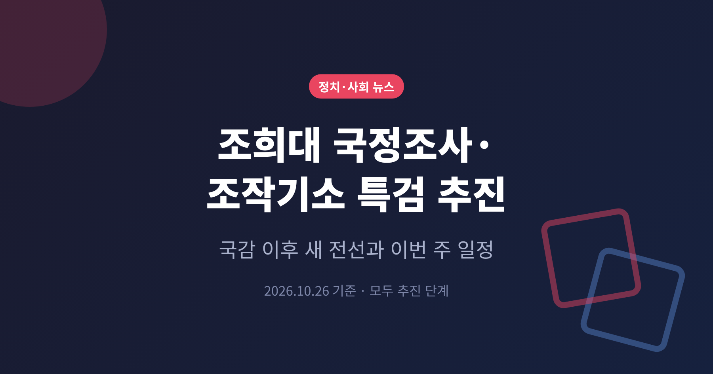
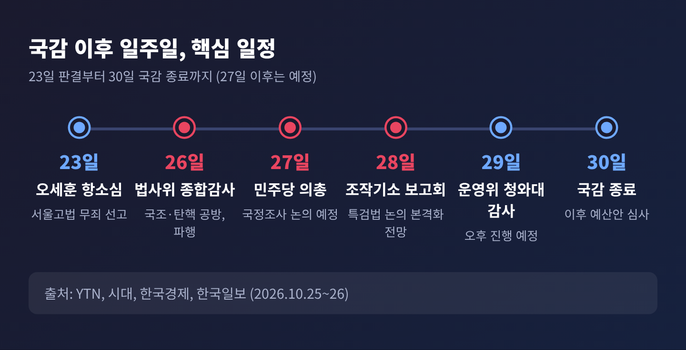
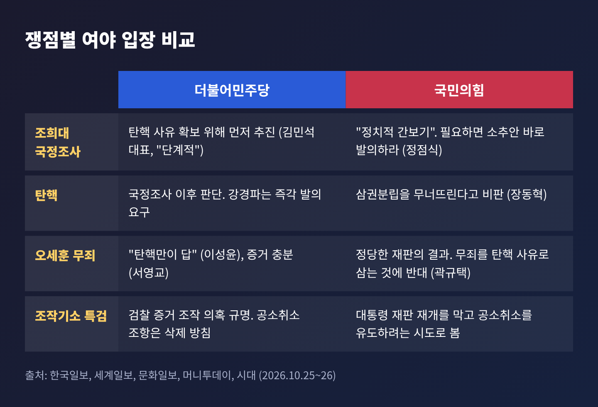
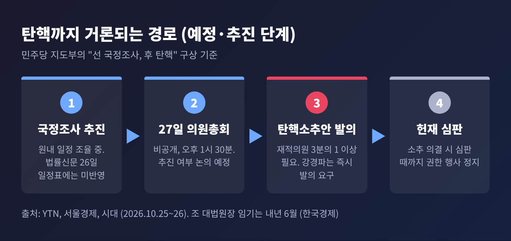
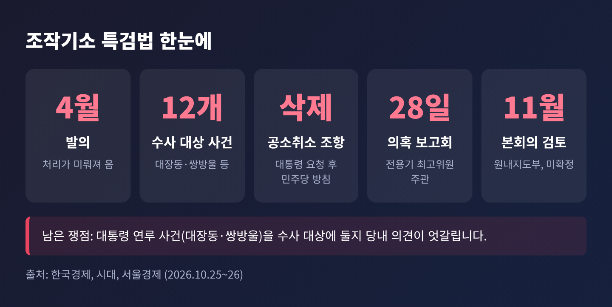
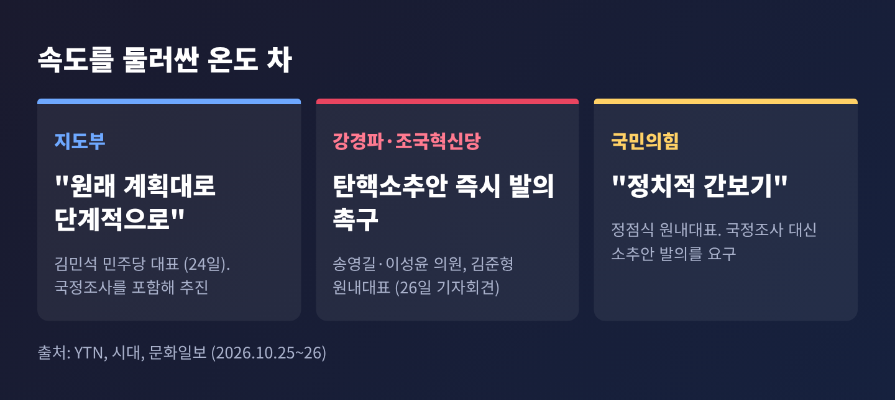

이번 글에서는 국정감사 직후 여야가 맞붙은 새 전선을 정리해 보겠습니다. 더불어민주당이 조희대 대법원장 국정조사와 조작기소 특검법을 밀고, 국민의힘은 이를 정면으로 반박합니다. 여야 내부의 온도 차와 이번 주 국회 일정까지 함께 살펴봅니다.
3줄 요약
국정감사는 10월 6일 시작해 4주 일정으로 이어졌고, 이번 주 마무리됩니다. 26~27일에는 법사위 등 6개 상임위가 종합감사를 하고, 28~30일에는 운영위·정보위·성평등가족위 감사가 남아 있습니다(YTN).
그 사이 정치권의 시선은 사법부로 옮겨 갔습니다. 박성준 민주당 수석대변인은 26일 당 유튜브에서 조희대 대법원장 국정조사와 조작기소 특검법을 "국감 이후에 해결해야 할 매우 큰 과제"로 꼽았습니다(문화일보, 천지일보).
예전엔 국감 기간 여야 공방이 주로 정부 기관을 향했습니다. 지금은 대법원장과 대통령 관련 재판이 중심에 섰습니다.

첫째, 사법부를 향한 국회의 압박이 구체적 절차로 옮겨 가는 국면이기 때문입니다. 국정조사는 탄핵으로 이어질 수 있는 길목으로 읽힙니다. 민주당 법사위 소속 한 의원은 국정조사 성과에 따라 탄핵으로 곧바로 이어질 수 있다고 봤습니다(문화일보).
둘째, 특검 대상에 이재명 대통령이 연루된 사건이 포함될 수 있습니다. 법안은 대장동 사건, 쌍방울 대북송금 사건 등 12개 사건을 수사 대상으로 삼는다고 보도됐습니다(한국경제).
셋째, 시간표가 맞물립니다. 국감이 30일 끝나면 사상 최대 규모로 알려진 820조 원 내년도 예산안 심사가 곧바로 시작됩니다(YTN). 쟁점 법안과 예산이 같은 시기에 겹칠 수 있습니다.
발단은 10월 23일입니다. 서울고법 형사7부가 정치자금법 위반 혐의로 기소된 오세훈 서울시장에게 1심 벌금 1,000만 원을 뒤집고 무죄를 선고했습니다. 명태균 씨 관련 여론조사비 대납 의혹이 쟁점이었습니다(한국일보, 쿠키뉴스).
서울경제는 이 판결로 여권이 수세에 몰리자 민주당이 지지층 결집 효과가 큰 사법 이슈를 전면에 내세운 것으로 해석했습니다. 어디까지나 매체의 해석입니다.
26일 법사위 종합감사에서는 양측 주장이 선명하게 갈렸습니다.

민주당 이성윤 의원은 "조희대 탄핵만이 답"이라고 말했고, 서영교 법사위원장은 증거가 충분한데 판단이 이상하다고 비판했습니다. 국민의힘 곽규택 의원은 무죄 선고를 탄핵 사유로 삼는 것을 문제 삼으며, 같은 재판부가 이재명 대통령 공직선거법 파기환송 사건을 진행하지 않는다고 맞섰습니다(한국일보, 세계일보).
법원행정처 쪽 설명도 있었습니다. 노경필 법원행정처장은 대법원장이 하급심 재판에 관여하지 않고, 법관 인사는 법관인사위원회와 대법관회의를 거친다고 밝혔습니다(한국일보).
이 과정에서 국민의힘 김민전 의원이 이 대통령 재판 변호인 출신의 공직 진출 자료를 화면에 띄웠습니다. 법사위원 3명의 실명이 담겨 있었고, 민주당이 반발해 서영교 위원장이 감사를 중지했습니다. 약 25분 뒤 재개됐습니다(쿠키뉴스, 세계일보).
김민석 민주당 대표는 24일 국정조사를 포함해 "단계적으로" 추진하겠다고 밝혔습니다. YTN은 이를 '선 국정조사, 후 탄핵' 방침으로 정리했습니다. 국정조사로 탄핵 사유와 명분을 확보하겠다는 구상입니다(서울경제).

다만 속도에 대한 생각은 다릅니다. 송영길·이성윤 의원, 김준형 조국혁신당 원내대표 등은 26일 촛불행동과 기자회견을 열고 탄핵소추안 즉시 발의를 촉구했습니다. 지난 3월 발의에 동의한 103명의 의원이 앞장서야 한다는 주장입니다(시대, 문화일보).
헌법상 탄핵소추안 발의에는 재적의원 3분의 1 이상이 필요합니다. 소추가 의결되면 헌법재판소 심판 때까지 대상자의 권한 행사가 정지됩니다(시대).
국민의힘은 두 갈래로 반응합니다. 정점식 원내대표는 국정조사를 "정치적 간보기"라고 부르며, 필요하면 소추안을 바로 내라고 요구했습니다. 장동혁 대표는 탄핵 논의가 삼권분립을 무너뜨린다고 비판했습니다(문화일보, 머니투데이).
시한도 변수입니다. 한국경제는 조 대법원장 임기가 내년 6월 끝나므로 연내 결론을 내야 한다는 의견이 있다고 전했습니다.
특검법안은 4월에 발의됐지만 처리가 미뤄졌습니다. 당청 지지율이 내려가는 상황에서 '방탄 입법'으로 비칠 수 있다는 우려가 있었기 때문이라고 한국경제는 전했습니다.
달라진 점은 지난달 이 대통령이 특검에 기존 기소 사건의 공소취소 권한을 주는 조항을 빼 달라고 요청한 것입니다. 민주당은 해당 조항을 뺀 법안을 처리할 방침입니다(한국경제, 시대).

남은 쟁점도 있습니다. 대장동·쌍방울 사건까지 수사 대상에 둘지를 두고 당내 의견이 엇갈립니다(한국경제).
국민의힘의 시각은 다릅니다. 이 대통령 관련 재판의 재개를 막고 공소취소를 유도하려는 시도로 본다는 것입니다. 장동혁 대표는 재판이 재개되면 대법원장이 물러나게 될 상황이라 직무정지로 막으려는 것이라고 주장했습니다(시대). 이는 장 대표의 주장이며, 민주당은 증거 조작과 허위 진술 유도 의혹을 규명하려는 것이라고 설명합니다(머니투데이).
차기 법무부 장관 인선도 얽혀 있습니다. 검찰 출신 박균택·양부남 의원이 후보군에 올랐다고 알려졌는데, 두 사람 모두 특검 필요성을 강조해 왔습니다. 국민의힘은 '죄 지우기' 임무를 맡기려는 것 아니냐고 비판했습니다(YTN).
민주당 안에서는 단계론과 즉각 탄핵론이 맞섭니다. 신천지 집단 입당 의혹을 두고도 충돌이 있었습니다. 23일 최고위에서 친청계 이성윤 최고위원이 조사 결과와 근거 공개를 요구하자, 친명계 박선원 최고위원이 직접 공개하겠다며 반발했습니다(머니투데이).
조국 조국혁신당 혁신정책연구원장은 SNS에서 민주당의 내부 통합과 조희대 탄핵 추진을 요구했습니다. 범여권 안에서도 속도를 둘러싼 압박이 이어지는 셈입니다.
국민의힘은 오 시장 무죄 판결을 환영하며 대통령 재판 재개를 요구하고 있습니다. 정점식 원내대표는 청와대 증인 채택이 불발돼도 인사 개입 논란을 계속 제기하겠다고 밝혔습니다(YTN). 이번에 확인한 보도에서는 국민의힘 내부 갈등이 드러나지 않았습니다.

이번 주 일정은 비교적 분명합니다.
특검법은 이번 정기국회 내 처리가 목표이고, 원내지도부는 11월 본회의를 염두에 두고 있다고 합니다. 다만 YTN은 여론 향방에 따라 처리 시나리오가 유동적일 것으로 내다봤습니다. 국정조사는 법률신문의 26일 국회 일정표에도 아직 잡혀 있지 않습니다. 날짜와 방식은 27일 의총 이후에야 윤곽이 보일 것입니다.
정리하면 이렇습니다. 국감이 끝나는 자리에서 사법부와 대통령 재판을 둘러싼 새 전선이 열렸고, 두 진영 모두 내부 조율이라는 숙제를 안고 있습니다.
국정조사도, 특검도 아직은 '추진' 단계입니다. 표결과 일정이 확정되기 전까지는 발표와 현실을 구분해서 보시길 권합니다.